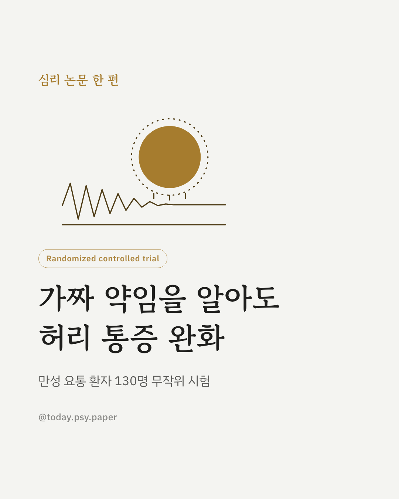
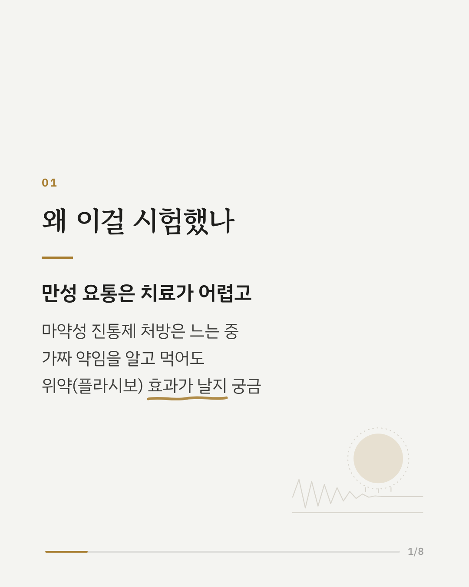
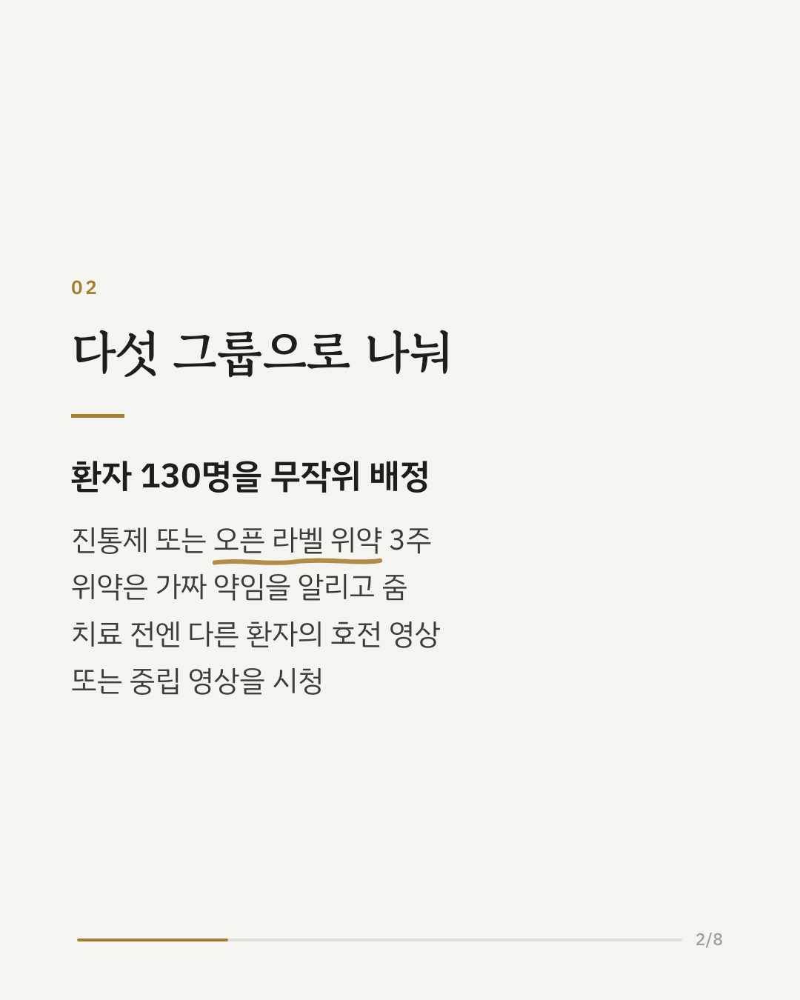
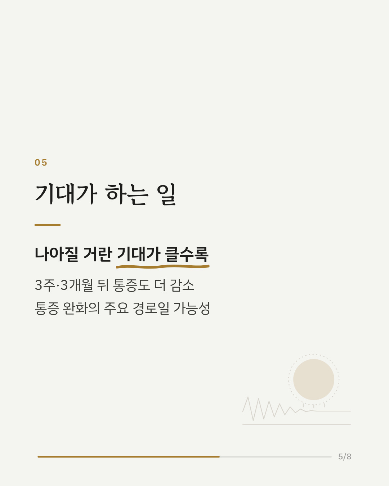
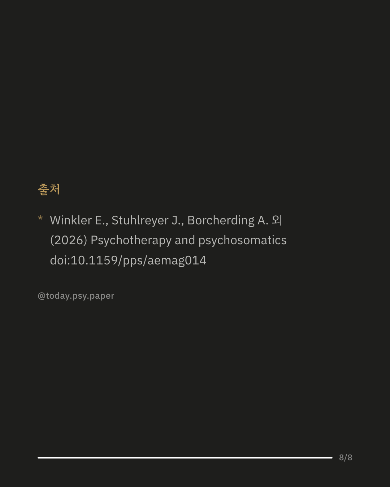

만성 요통은 오래 이어지고 치료가 어려운 통증입니다. 가짜 약이라는 사실을 미리 알려 주고 먹게 하는 '오픈 라벨 위약'도 허리 통증을 덜어 줄 수 있는지, 다른 환자의 호전 경험을 담은 영상이 그 효과를 키우는지 살펴본 무작위 대조 시험입니다. 만성 요통 환자 130명이 3주 동안 진통제(메타미졸) 또는 오픈 라벨 위약을 복용했고, 치료 전에는 호전 경험 영상이나 중립 영상을 봤습니다. 치료 없이 경과만 지켜본 그룹도 따로 두었습니다. 모든 치료 그룹에서 통증이 줄었고, 치료 없이 지켜본 그룹이 가장 적게 나아졌습니다. 호전 영상을 보고 오픈 라벨 위약을 먹은 그룹과 중립 영상을 보고 진통제를 먹은 그룹은 치료 없이 지켜본 그룹보다 통증이 더 줄었습니다. 연구진은 오픈 라벨 위약과 호전 영상을 함께 쓴 경우 진통제와 통계적으로 의미 있는 차이가 없는 진통 효과를 보였다고 정리했습니다. 통증이 나아질 거라는 기대가 클수록 3주 뒤와 3개월 뒤의 통증 감소도 컸습니다. 치료에 대한 기대가 통증 완화와 관련된 중요한 경로일 가능성을 보여 줍니다. 다만 일상 기능의 개선은 그룹 간 차이가 일관되지 않았고, 비교한 진통제도 한 종류뿐이었습니다. Psychotherapy and Psychosomatics (2026), 'Treatment Expectations across Open-Label Placebo and Pharmacological Contexts: A Randomized Clinical Trial in Chronic Low Back Pain' DOI: 10.1159/pps/aemag014 #임상심리 #심리학연구 #논문리뷰 #정신건강정보 #만성통증 #허리통증 #위약효과 #플라시보
python3 publish.py 42821491